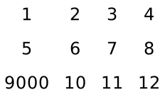
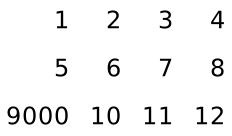

3 图形组合器
procedure
d : real? = 0.0 pict : pict-convertible? (vc-append [d] pict ...) → pict? d : real? = 0.0 pict : pict-convertible? (vr-append [d] pict ...) → pict? d : real? = 0.0 pict : pict-convertible? (ht-append [d] pict ...) → pict? d : real? = 0.0 pict : pict-convertible? (htl-append [d] pict ...) → pict? d : real? = 0.0 pict : pict-convertible? (hc-append [d] pict ...) → pict? d : real? = 0.0 pict : pict-convertible? (hbl-append [d] pict ...) → pict? d : real? = 0.0 pict : pict-convertible? (hb-append [d] pict ...) → pict? d : real? = 0.0 pict : pict-convertible?
不同的程序以不同的方式在正交方向上对齐图片。例如, vl-append 使所有的图片左对齐。
结果的下降对应于所有图片的下降指定的基线中最低的基线;同样,结果的上升对应于最高的上升指定的基线。 如果至少提供了一个 pict , 那么结果的最后一个元素(由 pict-last 报告)是(或 (or (pict-last pict) pict) , 使用最后提供的 pict 。
(define combiners (list vl-append vc-append vr-append ht-append htl-append hc-append hbl-append hb-append))
(define names (list "vl-append" "vc-append" "vr-append" "ht-append" "htl-append" "hc-append" "hbl-append" "hb-append"))
(define pict-a (colorize (filled-rectangle 60 30) "tomato"))
(define pict-b (colorize (disk 45) "cornflower blue"))
(define picts (for/list ([combiner combiners] [name names]) (list (text name null 15) (combiner pict-a pict-b)))) > (take picts 4) '(( ) ( ) (
) ( ))
> (drop picts 4) '(( ) ( ) (
) (
))
Changed in version 1.11 of package pict-lib: 删除了对某些中心坐标的隐式截断,改为整数。
procedure
(lt-superimpose pict ...) → pict?
pict : pict-convertible? (ltl-superimpose pict ...) → pict? pict : pict-convertible? (lc-superimpose pict ...) → pict? pict : pict-convertible? (lbl-superimpose pict ...) → pict? pict : pict-convertible? (lb-superimpose pict ...) → pict? pict : pict-convertible? (ct-superimpose pict ...) → pict? pict : pict-convertible? (ctl-superimpose pict ...) → pict? pict : pict-convertible? (cc-superimpose pict ...) → pict? pict : pict-convertible? (cbl-superimpose pict ...) → pict? pict : pict-convertible? (cb-superimpose pict ...) → pict? pict : pict-convertible? (rt-superimpose pict ...) → pict? pict : pict-convertible? (rtl-superimpose pict ...) → pict? pict : pict-convertible? (rc-superimpose pict ...) → pict? pict : pict-convertible? (rbl-superimpose pict ...) → pict? pict : pict-convertible? (rb-superimpose pict ...) → pict? pict : pict-convertible?
结果的下降对应于在所有图片的下降指定的基线中最低的基线;同样,结果的上升对应于最高的上升指定的基线。 结果的最后一个元素(由 pict-last 报告)是 pict 参数的最后一个元素 picts 中最低的、最右边的,通过比较最后一个元素的右下角确定。
(define names (list "lt-superimpose" "ltl-superimpose" "lc-superimpose" "lbl-superimpose" "lb-superimpose" "ct-superimpose" "ctl-superimpose" "cc-superimpose" "cbl-superimpose" "cb-superimpose" "rt-superimpose" "rtl-superimpose" "rc-superimpose" "rbl-superimpose" "rb-superimpose"))
(define pict-a (colorize (filled-rectangle 60 30) "tomato"))
(define pict-b (colorize (disk 45) "cornflower blue"))
(define picts (for/list ([combiner combiners] [name names]) (list (text name null 15) (combiner pict-a pict-b)))) > (take picts 3) '(( ) (
) ( ))
> (take (drop picts 3) 3) '((
) (
) ( ))
> (take (drop picts 6) 3) '(( ) ( ) (
))
> (take (drop picts 9) 3) '((
) (
) (
))
> (take (drop picts 12) 3) '(( ) (
) (
))
Changed in version 1.11 of package pict-lib: 删除了对某些居中坐标的隐式截断,使之成为整数。
procedure
base : pict-convertible? dx : real? dy : real? pict : pict-convertible? (pin-over base find-pict find pict) → pict? base : pict-convertible? find-pict : pict-path? find : (pict-convertible? pict-path? . -> . (values real? real?)) pict : pict-convertible?
> (pin-over (colorize (filled-rectangle 70 40) "chocolate") 10 10 (colorize (filled-rectangle 30 30) "orange"))
> (define top (colorize (filled-rectangle 70 40) "royalblue"))
> (pin-over (vc-append top (colorize (filled-rectangle 70 40) "firebrick")) top cb-find (colorize (disk 20) "white"))

procedure
base : pict-convertible? dx : real? dy : real? pict : pict-convertible? (pin-under base find-pict find pict) → pict? base : pict-convertible? find-pict : pict-convertible? find : (pict-convertible? pict-path? . -> . (values real? real?)) pict : pict-convertible?
> (define txt (colorize (text "P I C T S" null 25) "chocolate"))
> (define rect (colorize (filled-rectangle (pict-width txt) (* 0.3 (pict-height txt))) "lemonchiffon"))
> (pin-under txt 0 (- (/ (pict-height txt) 2) (/ (pict-height rect) 2)) rect)
procedure
(table ncols picts col-aligns row-aligns col-seps row-seps) → pict? ncols : exact-positive-integer? picts : (non-empty-listof pict-convertible?)
col-aligns :
(or/c (list*of (->* () #:rest (listof pict-convertible?) pict-convertible?)) (listof (->* () #:rest (listof pict-convertible?) pict-convertible?)))
row-aligns :
(or/c (list*of (->* () #:rest (listof pict-convertible?) pict-convertible?)) (listof (->* () #:rest (listof pict-convertible?) pict-convertible?))) col-seps : (or/c (list*of real?) (listof real?)) row-seps : (or/c (list*of real?) (listof real?))
col-aligns, row-aligns, col-seps 和 row-seps 参数是 “lists” ,指定行和列之间的对齐分离。 对于 c 列和 r 行,前两个应该有 c 和 r 的叠加程序, 而后两个应该分别有 c-1 和 r-1 的数字。 列表可以是 "不恰当的"(即以数字结束,而不是以空列表结束), 在这种情况下,非对 cdr 被用作所有剩余列表项的预期值。 col-aligns 和 row-aligns 程序用于叠加一列或一行中的所有单元格; 这种叠加决定了该列或行的总宽度或高度,也决定了该列或行中每个单元格的水平或垂直位置。
> (table 4 (map (λ (x) (text (format "~a" x))) (list 1 2 3 4 5 6 7 8 9000 10 11 12)) cc-superimpose cc-superimpose 10 10) 
> (table 4 (map (λ (x) (text (format "~a" x))) (list 1 2 3 4 5 6 7 8 9000 10 11 12)) rc-superimpose cc-superimpose 10 10) 